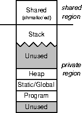

The RSIM multiprocessor memory model is depicted in Figure 5.1. The regions below the dividing line are all private memory, while the regions above the dividing line are shared memory allocated with the shmalloc function. The stack for each process grows automatically, while the heap and shared region grow only through explicit memory allocation calls.
At the beginning of execution, RSIM starts an application with a single processor in the specified architectural configuration. The application must then use the fork() system call to spawn off new processes, each of which is run on its own processor. The semantics of fork() are identical to those of UNIX fork(). In the context of RSIM, fork() causes the new processor to have its own copy of the application code segment, global and statically allocated variables, private heap, and process stack, but the new processor has the same logical version of the shared portion of the address space. Since RSIM currently does not support multitasking, indeterminate results will arise if more processes are started than the number of processors specified in the configuration file.
The only way to allocate shared memory is through the shmalloc function (which has syntax similar to malloc). Memory allocated using shmalloc cannot currently be freed; code that needs a substantial amount of runtime dynamic shared-memory allocation and freeing should implement its own shared-memory allocator, using the shmalloc call only to allocate large regions of shared memory.
In multiprocessor mode, RSIM assumes a perfect hit rate for private accesses. Resource contention and instruction scheduling for private accesses is simulated, but the actual cache behavior is not. Private memory includes the process stack, statically allocated data structures, and heap space allocated by malloc and its standard variants. All memory to be fully simulated must be explicitly allocated using shmalloc. Note that shmalloc can be used even in the case of uniprocessor simulations. However, in uniprocessor mode, all accesses (private and shared) can be simulated at the caches through the use of the ``-n'' option, discussed in Chapter 4.
Each region of shared memory has a ``home node,'' which provides the directory services for the cache lines in that region. Shared-memory regions can be associated to specific home nodes using the AssociateAddrNode function. Regions can be associated at the granularity of a cache line. (The semantics for AssociateAddrNode are specified in more detail in Section 5.2.) If the user does not explicitly associate a shared region with a home node, the home node is chosen using a first-touch policy with a cache-line granularity.

Figure 5.1: RSIM multiprocessor memory model